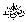
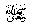
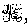
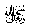
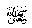
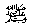

Hadhrat Salmaan 
“O People, a great month has dawned upon you, a most blessed month, in
which is a night greater in value and goodness than a thousand months.
It is a month in which Allah 
This is indeed the month of patience and the reward for true patience is Jannah (paradise). It is the month of showing kindness to everyone. It is the month in which a true believer’s rizq (food, money, etc.) are increased. Whosoever feeds a fasting person in order to break the fast at iftaar (sunset), for him there shall be forgiveness of sins and freedom from the fire of Jahannam (hell) and he shall receive the same reward as the fasting person (whom he fed) without the fasting person losing any reward.
Thereupon we said, ‘O Messenger of Allah  
This is a month, the first of which brings Allah’smercy, the middle of which brings His forgiveness and the last of which brings freedom from the fire of Jahannam.
Whosoever gives less work to his servants or workers, Allah will forgive him and free him from the fire of Jahannam.
In this month you should perform four things in great number, two of which is to please Allahwhile the other two are such that you cannot do without. Those which are to please Allahare that you should recite in great number the Kalimah Tayyibah - Laa ilaaha illallah (i.e. To bear witness that there is no god except Allah) and to recite istighfaar (beg Allah’sforgiveness with astaghfirullah). As for those which you cannot do without, you should beg of Allah for entrance into Jannah and ask protection in Him from Jahannam.
And whoever gives a fasting person water to drink, Allahshall grant him to drink from my fountain, such a drink, after which that person shall never feel thirsty again until he enters Jannah.” (Reported by Ibn Khuzaimah in his ‘Saheeh’.)
Commentary:
Rasulullahgave this lecture at the end of Shabaan, because he wanted to show us the great importance of Ramadhaan so that we do not allow one second of this month to go to waste.
Fasting has been made fardh by Allahwho has also made sunnah the Taraweeh Salaah by night.
From this Hadeeth we learn that the command for Taraweeh Salaah
too comes from Allah  
Many people say that you may listen to the full Qur-aan being read in a certain Musjid in eight or ten nights and then stop performing Taraweeh with jamaat as the sunnah has been fulfilled. This is wrong. By doing this only one sunnah will be fulfilled and the other lost. We should remember that there are two separate sunnats. Firstly, it is sunnah to hear the full Qur-aan being read in the Taraweeh in Ramadhaan. Secondly, it is sunnah to perform Taraweeh with jamaat for men in the Musjid throughout Ramadhaan. Women should perform their Taraweeh at home.
Another point that we learn in the Hadeeth is that Rasulullah told us that any nafil done in Ramadhaan is rewarded as much as a fardh in normal times and a fardh done in Ramadhaan has the reward of seventy fardh at other times.